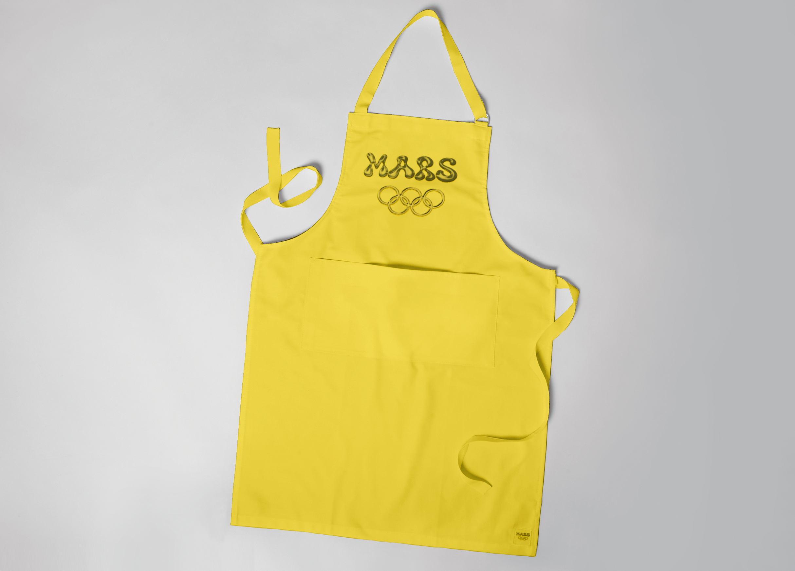
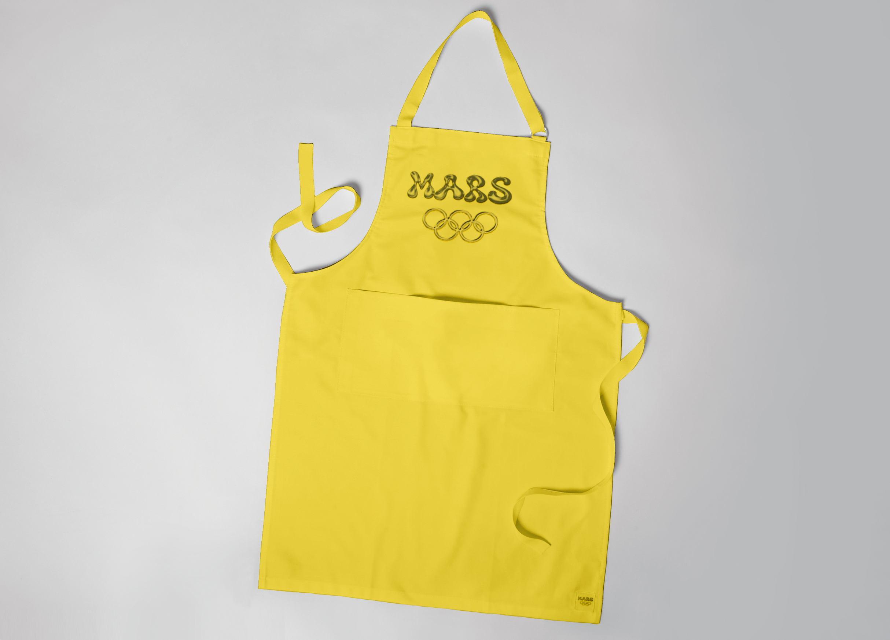

Olympics on Mars - Cleaning Ladies
For this project, I had to create a full visual identity for a fictional Olympic event on Mars — and choose who we would send to compete. After doing some research, I found out that Mars is extremely dusty and red because of all the iron oxide in the soil. That’s when I got the idea: let’s send cleaning staff. If anyone can handle dust, it’s them.
I designed the entire identity to fit their world — strong, clear, and with a playful twist. The logo, icons, and colors are inspired by both cleaning gear and sporty graphics. The sports are specially made for their skills, like wiping, sweeping, and vacuuming with precision.
The website matches the visual style and keeps the tone fun but respectful — a celebration of hard work in a totally new setting. It turns the people we often overlook into the stars of their own Olympic story.
The result isn’t perfect — and it doesn’t have to be. This was one of my very first full design projects, made with little experience but a lot of curiosity and motivation. It was a super valuable learning experience where I explored concept development, visual systems, and storytelling in a way I hadn’t done before. That makes it a project I’m still proud of.